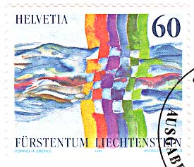
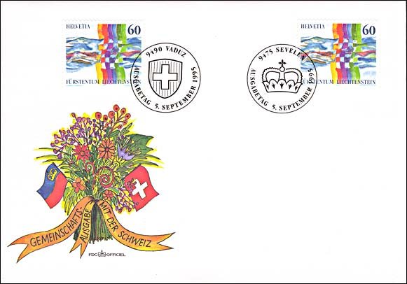
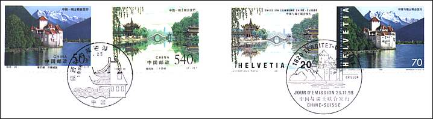
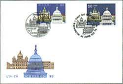
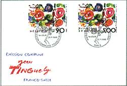
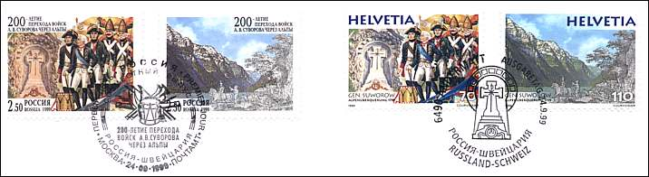

In history Switzerland will have the last word. Victor Hugo.
The image below displays a joint issue that can be considered a perfect one. Switzerland and Liechtenstein issued on the 5th of September 1995 only one joint stamp, what was possible due to the postal and monetary union that exists between both countries. These are classified in Scott as Liechtenstein No. 1055 and Switzerland No. 960.

The stamp was valid for postage in both countries, what is an exception, because the Swiss stamps are not valid for franking in Liechtenstein and vice-versa. Since the 1st of January 2002 the stamp isn't valid for franking in Liechtenstein anymore, because the new PA demonetized all older issues.

The nice FDC shows the stamp cancelled in 9490 Vaduz, Liechtenstein (with the Swiss cross on the cancel) and the same stamp, another piece, cancelled in 9475 Sevelen, Switzerland (with the crown of Liechtenstein princes on the cancel). An onetime issue! The text "Gemeinschaftsausgabe mit der Schweiz" means "Joint issue with Switzerland", and disclosures this way the Liechtenstein origin of the FDC. Another FDC, with the inscription "Gemeinschaftsausgabe mit Liechtenstein" doesn't exist, so that the perfect symmetry ends here. Just a finesse, of course...

See above the very interesting Chillon castle, in Veytaux-Montreux, Switzerland, featured on the below stamps.

Of course Switzerland hasn't forgot its traditional relationships with the big countries of the planet. A nice joint issue with the country having the biggest population in the world, China, was presented on 11th of November 1998. The stamps were cancelled in Beijing and at 1820 Territet-Veytaux. The size of the FDC doesn't permit for showing it entirely. Please note that, as long as not expressly specified on this page, each country has issued its own stamps. To learn more about this issue please click here.
|
 |
 |

The 22nd of February 1991 a joint issue with the most powerful country on the earth, the USA, was offered to the philatelic world. The subject is not very thrilling, showing two administrative buildings (Swiss Parliament in Bern and Capitol in Washington) that appeared already earlier on different stamps. The stamps were cancelled at 3000 Bern and at Washington, DC 20066. For US stamp collectors: click on the image in order to see the FDC in its full splendor. Before that, in 1988, a joint issue with France, our neighbor, was brought on November 25. It displays the work of the painter Jean Tinguely named Metamecanique (even if Metaphysique, Metastases or Poppies were also appropriate).

And of course the country covering the biggest surface on Earth, Russia, wasn't forgotten either. The stamps, issued the 4th of September 1999, are dedicated to the 200th anniversary of the "glorious" crossing of Swiss Alps by the troops of the Russian general Suvorov. The stamps were cancelled at 6490 Andermatt and at the Moscow Post Office. The FDC is too big to be entirely shown here.
Links:
-
Next Joint Issues of Switzerland
-
Switzerland - SNA joint issue
-
China-Switzerland joint issue
-
Chillon Castle
-
Swiss Embroidery Stamp
-
Hans Erni, A Swiss Stamp designer
|
|